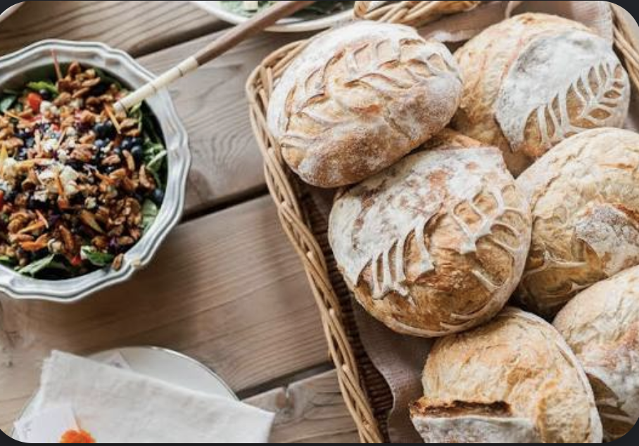
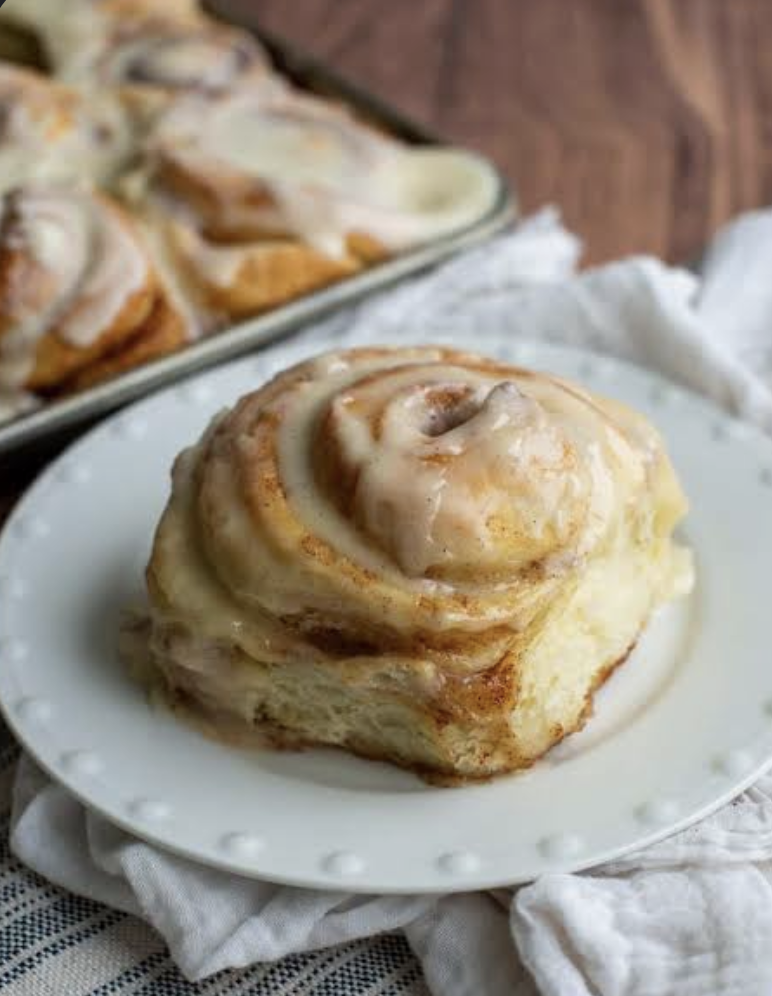
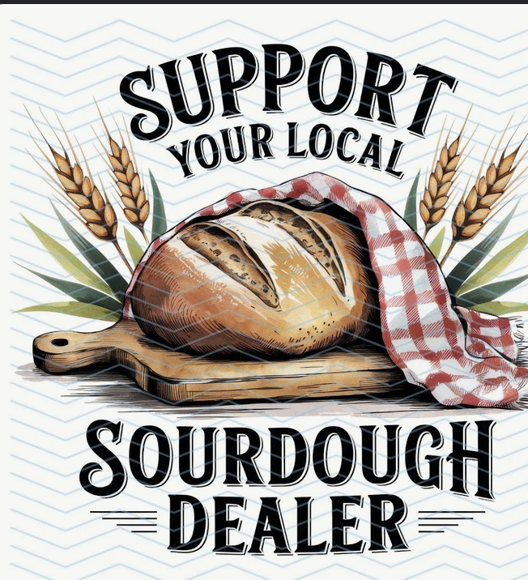

Country Sourdough
Our signature slow-fermented loaf, made with the starter that traces back to Chama.
Baked in small batches
Everything made from scratch
Sourdough is the heart of what we do, but there is always room for something sweet and a hot cup of coffee.

Small batch baking
Sourdough does not like to be rushed. We let the dough develop slowly and bake in smaller batches so each loaf gets the attention it deserves.
Ask About an Order